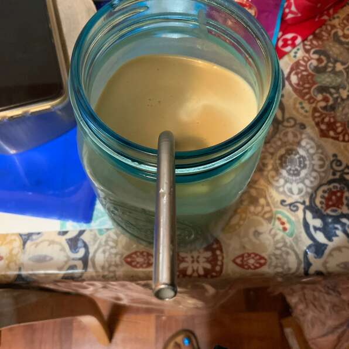

Peanut Butter Banana Smoothie

It is so refreshing and it's sweet and tasty.
- Prep: 5 mins
- Total: 5 mins
Yield: 4 servings
Ingredients
2 bananas, broken into chunks
2 cups milk
½ cup peanut butter
2 tablespoons honey, or to taste
2 cups ice cubes
Directions
Place bananas, milk, peanut butter, honey, and ice cubes in a blender; blend until smooth, about 30 seconds.
Return to recipe selection